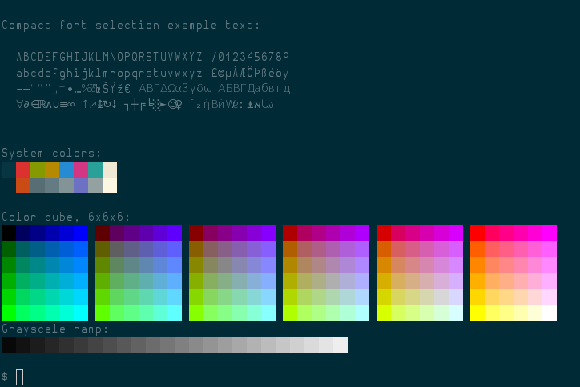
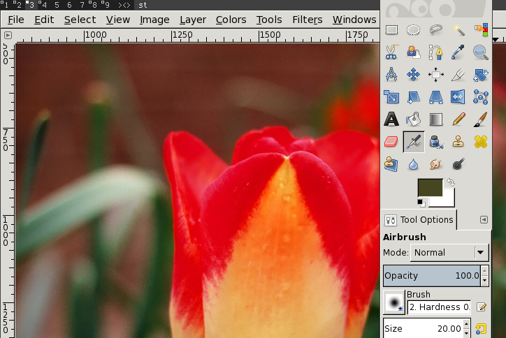
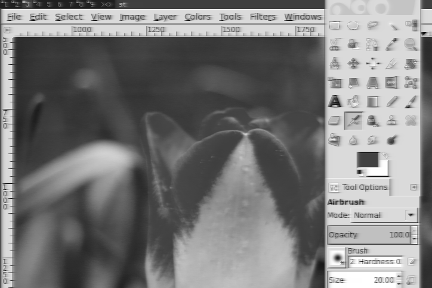

An OpenBSD Workstation
Terminal Fonts
The most important feature of any workstation is getting a terminal that is pleasant to use. By default most terminals render text with a heavier weight than I would like. To solve this select a font with a light or book variation. Here is my invocation for the simple terminal
st -f 'Hermit:light:pixelsize=14:antialias=true:autohint=true'
My st port includes
- The solarized color scheme
- A modification to render bold fonts with the weight normal
The really compelling feature of st is that it automatically substitutes glyphs from the default font if the one you've selected does not contain them. This enables me to use the really excellent Hermit font while retaining the extended character set of DejaVu Sans.

To ensure you get full Unicode support from applications such as mutt or tmux set your language type using
LC_CTYPE=en_US.UTF-8 export LC_CTYPE
Suspend & Resume
OpenBSD has very good ACPI support, see apmd(8). zzz and ZZZ are shortcuts for suspend and hibernate if apmd is run at startup.
apmd_flags="-A"
-A will automatically scale the CPU frequency to save power.
X Configuration: .xinitrc
# .xinitrc xset -b while true; do batt="$(sysctl -n hw.sensors.acpibat0.watthour3 | cut -f1,2 -d" ")" xsetroot -name "$batt" sleep 60 done & xsetroot -solid gray40 exec dwm
xset -b disables the annoying beep that terminals sometimes make.
I run a loop in the background that read the available battery life (Wh) and updates the window manager's display area. Any sensor data can be included in such output.
Finally set the background color and start your favorite window manager.
Switch to an External Monitor
Hopefully your desktop monitor is larger than your laptop display. I use a little docking script to switch to the external display that detects which connection is used and switches the others off
#!/bin/sh dp() { xrandr --output LVDS1 --off xrandr --output VGA1 --off xrandr --output DP1 --auto xrandr --output HDMI1 --off } hdmi() { xrandr --output LVDS1 --off xrandr --output VGA1 --off xrandr --output DP1 --off xrandr --output HDMI1 --auto } set -x xrandr --query | grep "DP1 connected" && dp xrandr --query | grep "VGA1 connected" && hdmi xrandr --query | grep "HDMI1 connected" && hdmi
In my experience X11 will sometimes hide the cursor if resumed while using an external monitor. To solve this I use the unclutter utility to enable the cursor again after a short period of activity.
pkill unclutter unclutter -idle 1 -root -grab -visible &
Connecting to a Projector
If you started X with the VGA connected, it may pick a resolution common to both your screen and the external display. On my T60 it can be reset like so
xrandr --output LVDS --mode 1400x900
Use --query to find out what modes each display supports.
If the external display supports a lower resolution you can set up a viewport that pans with the mouse pointer
xrandr --output VGA-0 --mode 1280x720 --panning 1400x900
Or force both screens to use the same resolution
xrandr --output VGA-0 --mode 1280x720 --output LVDS --mode 1280x720
I also add some additional logic in my .xinitrc to switch to the external display automatically if X is started while connected to an external monitor:
xrandr --query | grep "DVI-0 connected" && ~/bin/docked-dvi xrandr --query | grep "VGA-0 connected" && ~/bin/docked-vga
tmux
There's only a few tweaks I make to my terminal multiplexor's configuration. I frequently run entr in a smaller pane on the bottom
bind-key C-t split-window -p 25
I don't know of a terminal color picker, but they can be printed with a shell loop.
#!/bin/ksh for i in `jot 255`; do printf "\033[38;5;${i}mcolour${i}\n" done
Then I set status background and active border to bright green
set -g status-bg colour118 set -g pane-active-border-fg colour118 set -g pane-border-fg colour30
Most importantly, clean up the status bar so that only the window names are displayed:
# remove status debris set -g status-left '' set -g status-right ''
Using Disk Encryption
OpenBSD provides software RAID by way of a virtual host bus adapter called softraid0. This HBA is also used for setting up disk encryption. To set use a disklabel (in my case for sd0g /home set the partition type to RAID
$ doas disklabel -E /dev/sd0c Label editor (enter '?' for help at any prompt) g: 55641600 100653824 RAID > m g offset: [100653824] size: [55641600] FS type: [4.2BSD] RAID
Now configure it for crypto using -c C
# bioctl -c C -l /dev/sd0g softraid0 New passphrase: My Crypto Pass Phrase Re-type passphrase: My Crypto Pass Phrase softraid0: CRYPTO volume attached as sd1
Mount it using the same command. The kernel log will show a new virtual device appear
sd1 at scsibus2 targ 1 lun 0: <OPENBSD, SR CRYPTO, 005> SCSI2 0/direct fixed sd1: 27168MB, 512 bytes/sector, 55641072 sectors
Now add a disklabel and format the encrypted volume
$ doas disklabel -E /dev/wd0c $ doas newfs /dev/rwd0a
Devices in OpenBSD may be mounted by device name or by disklabel UID which is a random id generated when the label is created.
$ disklabel /dev/sd1c | grep uid duid: 779d87bac3905122
It's this ID that we'll to mount the volume, in this way plugging in other drives won't confuse mount after we prompt the user for a password on boot. Adding the following to rc.local will ask for a password four times before giving up
#/etc/rc.local for attept in 1 2 3 4; do bioctl -c C -l f878bdbe8655a6eb.k softraid0 && break sleep 1 done fsck -y 0728fd2c8e49bc73.a mount -o nodev,nosuid,softdep,wxallowed f12a2aa015f390df.a /home
That last mount parameter wxallowed is important because it will allow you to run certain interpreters such as Python from a virtualenv in your home directory.
If you would like to enable crypto on the entire boot volume see this post by Ted Unangst.
Reducing Password Fatique with YubiKey
Yubico makes a nice little hardware key that, among other things, can be used to generate one time passwords for user authentication. The yubikey-personalization-gui is a Qt-based program that can be used to write private keys to one of two "slots". Copy the 6-byte private identity and the 16-byte secret key without spaces to like so
echo "5c e1 e0 3e 63 a4" \
| tr -d ' ' > /var/db/yubikey/$USER.id
echo "57 e3 af 3e 9b 51 2b 10 58 7d 33 fb d9 08 ef 7b" \
| tr -d ' ' > /var/db/yubikey/$USER.key
chmod 600 /var/db/yubikey/$USER.*
Now set YubiKey as the authentication method for the group staff by editing /etc/login.conf
- :tc=auth-defaults: + :auth=yubikey
If you're a long-time BSD user you might be tempted to run cap_mkdb to rebuild the login DB. You don't need to do this; in fact the new .db file will override local changes to /etc/login.conf
To reduce typing I use the second slot on the Yubikey as a relatively secure method of enabling ssh-agent in order to connect to remote systems where my public key(s) are installed. To start use the yubikey-personalization-gui to generate a random key, then set slot 2 to challange-response mode with this key
hexkey=$(echo "dd b6 68 81 c9 73 f9 64 84 21 7e f0 69 e8 2c 28 1b 6c ad e2" | tr -d ' ') ykpersonalize -2 -ochal-resp -ochal-hmac -ohmac-lt64 -a $hexkey
Next I create new ssh keys (ssh-keygen) using part of the reply from ykchalresp. I installed script as bin/ykauth
#!/bin/sh ykchalresp -2 "mysecret" | cut -c 1-15
Finally add this bit of logic to .profile to automatically activate these keys when I log in
ssh-add -l > /dev/null 2>&1 || { eval `ssh-agent` 0<&- SSH_ASKPASS='/home/eradman/bin/ykauth' ssh-add exec xinit }
Closing STDIN provokes ssh-add to use the program specified in by SSH_ASKPASS
Performance Tuning
There is no documentation on improving the responsiveness of an OpenBSD desktop. These are the tweaks I make. First I allow applications to consume more RAM
# /etc/login.conf staff:\ :datasize-cur=2048M:\ :datasize-max=2048M:\ :datasize=2048M:\ :openfiles-cur=1024:\ :stacksize-cur=16M:\
If you know of other strategies for tuning desktop performance, please send me what you know.
Screen Lock
Add the following to your .xinitrc to automatically lock the screen after 5 minutes of activity
xidle -timeout 300 -program "/usr/local/bin/slock" &
To trigger this action when the system is suspended, create /etc/apm/suspend with an instruction to signal xidle to run the lock program
#!/bin/sh pkill -USR1 xidle
Using a custom version of slock it is possible to display a custom image. I like to construct a grayscale and slightly blured image based on what's on the screen when slock was called
gm import -screen :0 -window root /tmp/import.png gm convert -colorspace Gray -motion-blur 0x4+180 /tmp/import{,2}.png exec /usr/local/bin/slock -i /tmp/import2.png


Switching Networks
One thing that might not be obvious on BSD is how to switch from one network to another. When switching from wireless to wired for example. First, remove any IP addresses and set the interface down.
ifconfig wpi0 -inet down
Removing the IP address from an interface also drops any link-local or so-called "connected" routes. It may be helpful to nuke all routes.
route -n flush
-n prevents route from trying to resolve hostnames.
If you have set up WPA on your wireless card you can likewise remove the network parameters to obtain a broadcast SSID
ifconfig wpi0 nwid "Mobile Hotspot" wpa wpakey 09123456789 ifconfig wpi0 -nwid -wpa -wpakey # use broadcast id